Tap anywhere to close
Title
Description
Chart Title
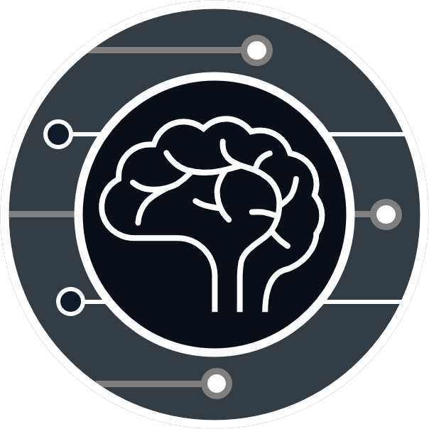
CogAegisTrain the mind to master AI
CogAegis is an AI literacy training firm that helps individuals and organizations adopt AI tools to boost productivity without sacrificing independent thinking and creative ownership. We offer customized AI literacy training sessions at every level, from foundational tool use to building custom AI agents; workshops and information sessions to highlight risks associated with AI tools and how to navigate around these risks; and help build custom AI agents to improve user productivity and performance. We specialize in AI literacy training for seniors, students, educators, and communities across south and central Vancouver Island, with plans to expand into the Lower Mainland of British Columbia and other major cities across Canada.
To increase AI fluency to individuals and organizations with the knowledge, tactics, and tools to deploy AI as a force multiplier for productivity while preserving human critical thinking and creative capacities.
Nothing can replace the beauty of the human mind for creativity, and therefore, we must actively defend it.
AI is essential for commercial survival, so we must learn to master it without compromising our independent reasoning.
Every individual and organization faces unique needs and will require customized solutions.
We deliver AI literacy training across all skill levels, alongside cognitive defense strategies that protect critical thinking and originality from AI overreliance. Our training also includes AI detection training, so that individuals know when they are reading, listening to, or watching AI-generated content. For organizations, the firm develops customized AI agents and SOPs that can enhance productivity without compromising independent human logic and creativity.
We exist to teach individuals and organizations how to use and benefit from AI.
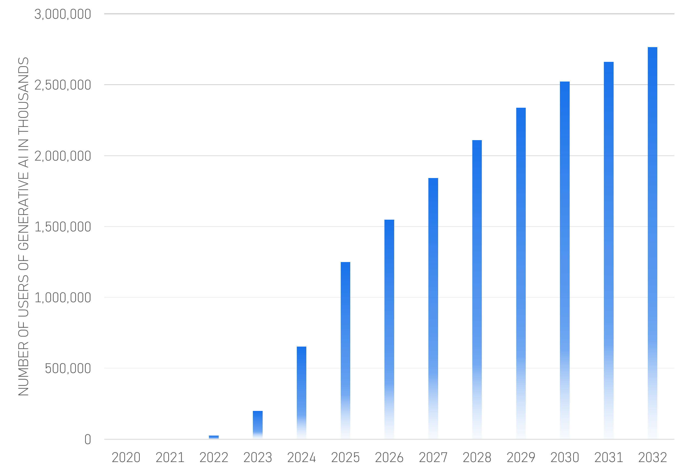
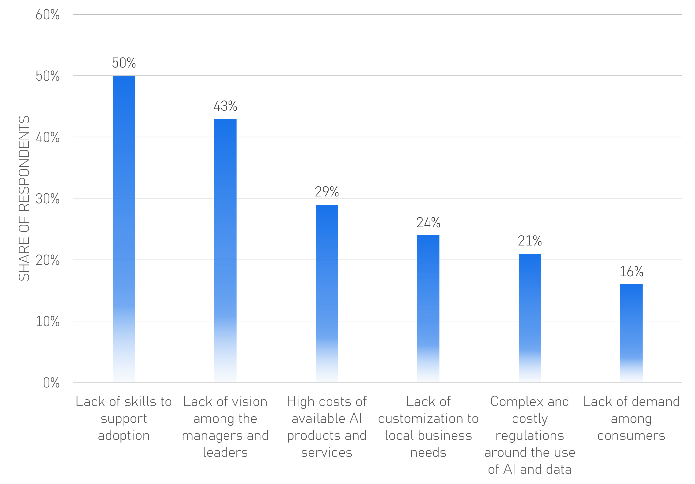
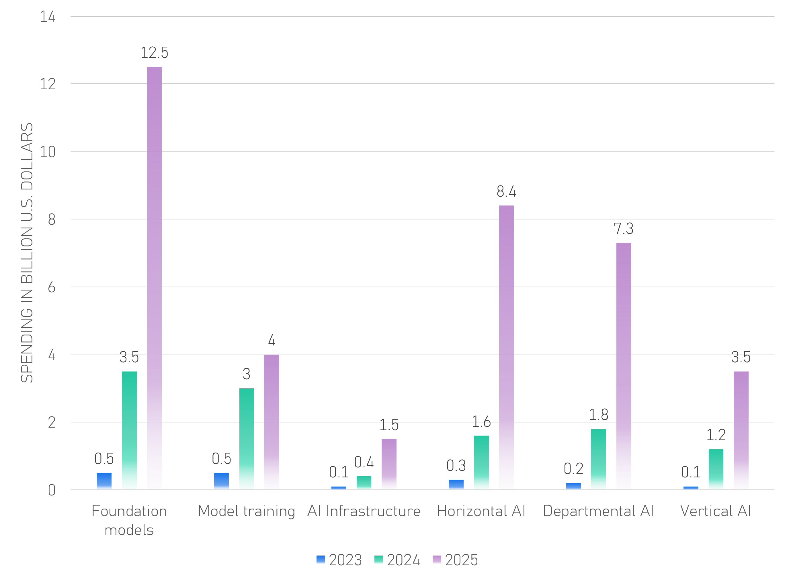
We exist to protect human ingenuity and cognitive thinking while using AI tools.
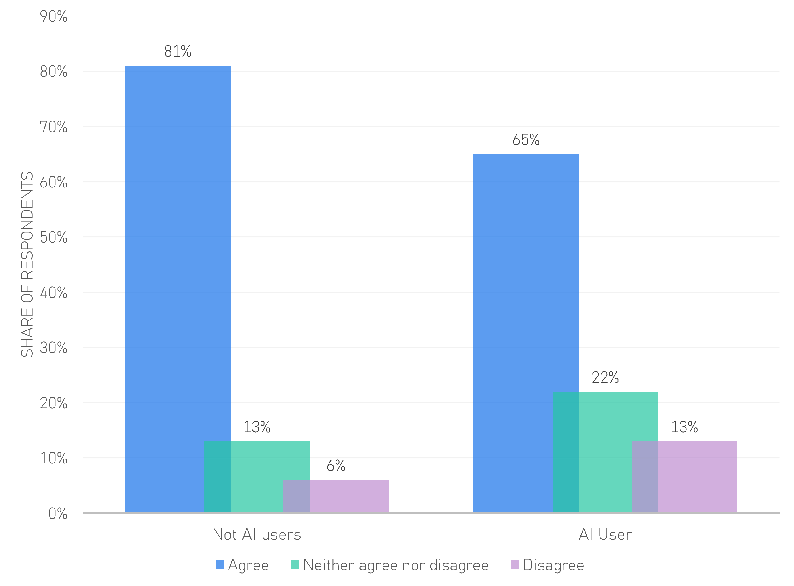
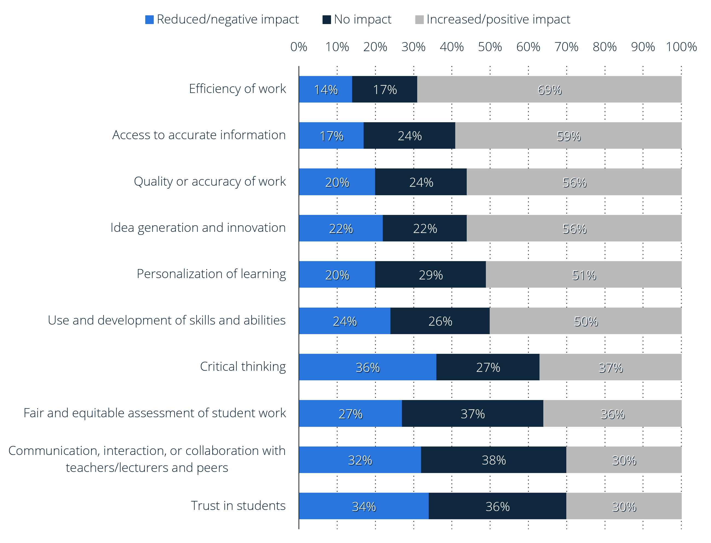
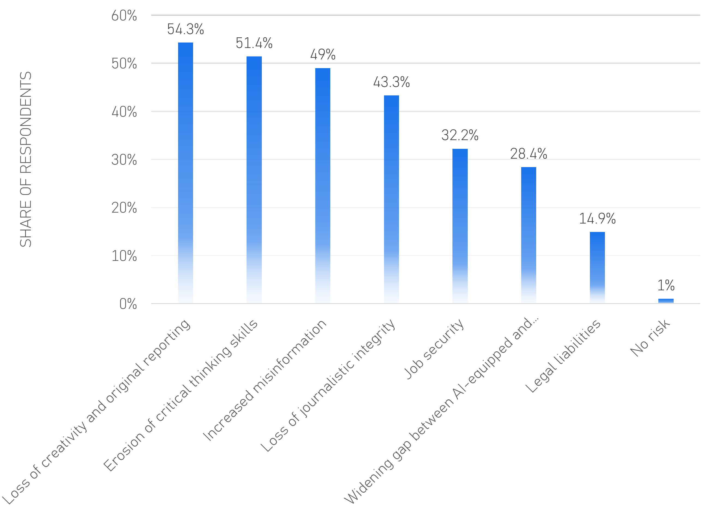
We exist to harmonize cutting-edge AI tools to enhance human intellect and creativity and not replace it.
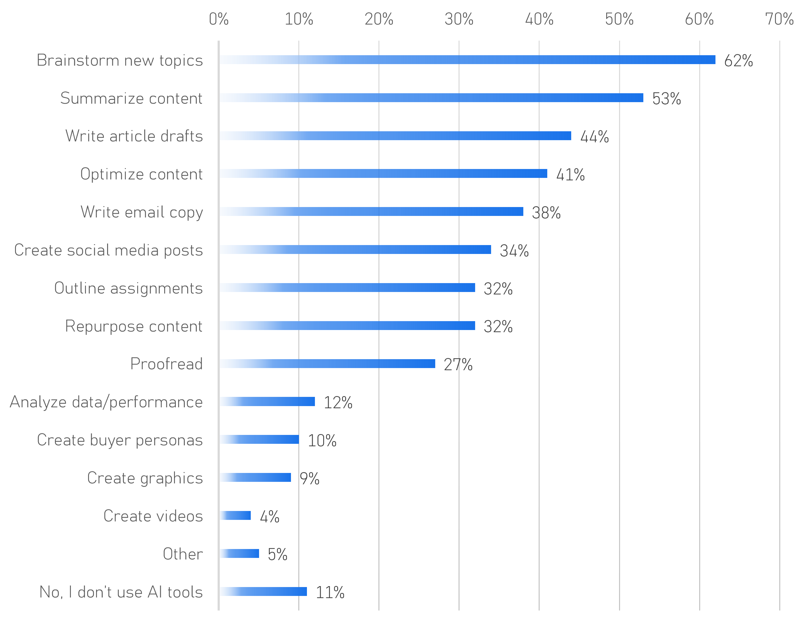
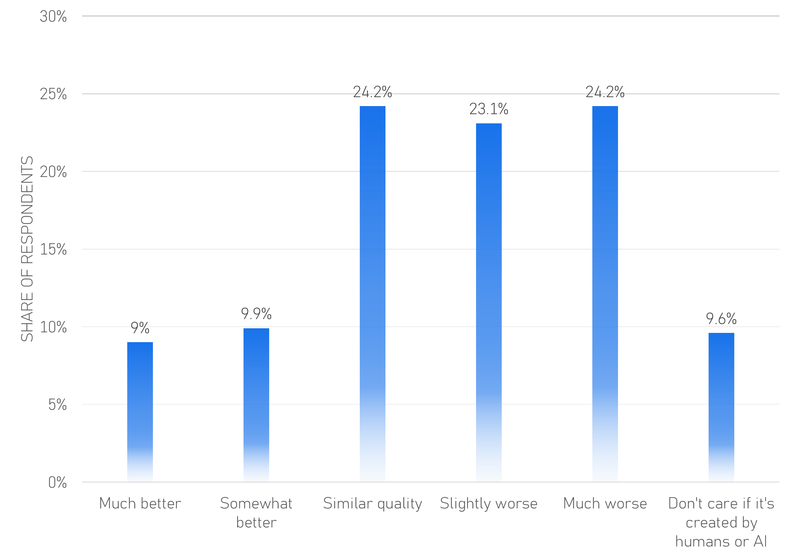
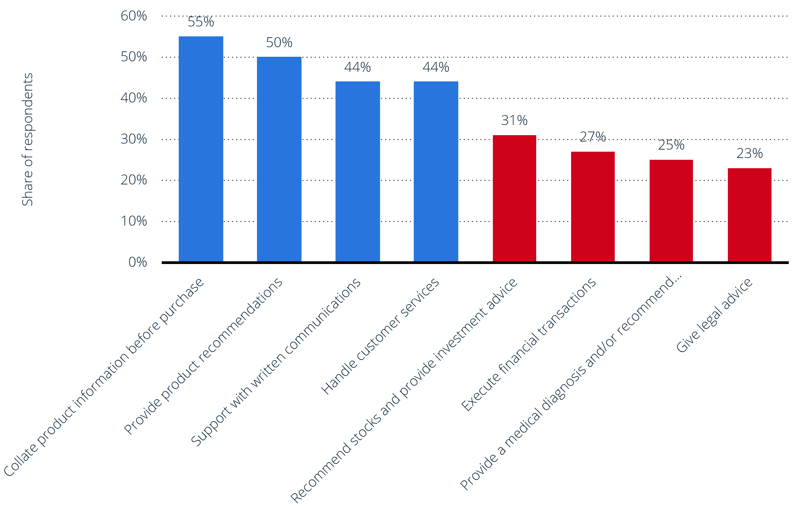
CogAegis is rooted on Vancouver Island, expanding next to the Lower Mainland, with the long-term goal of serving every major city centre in Canada.
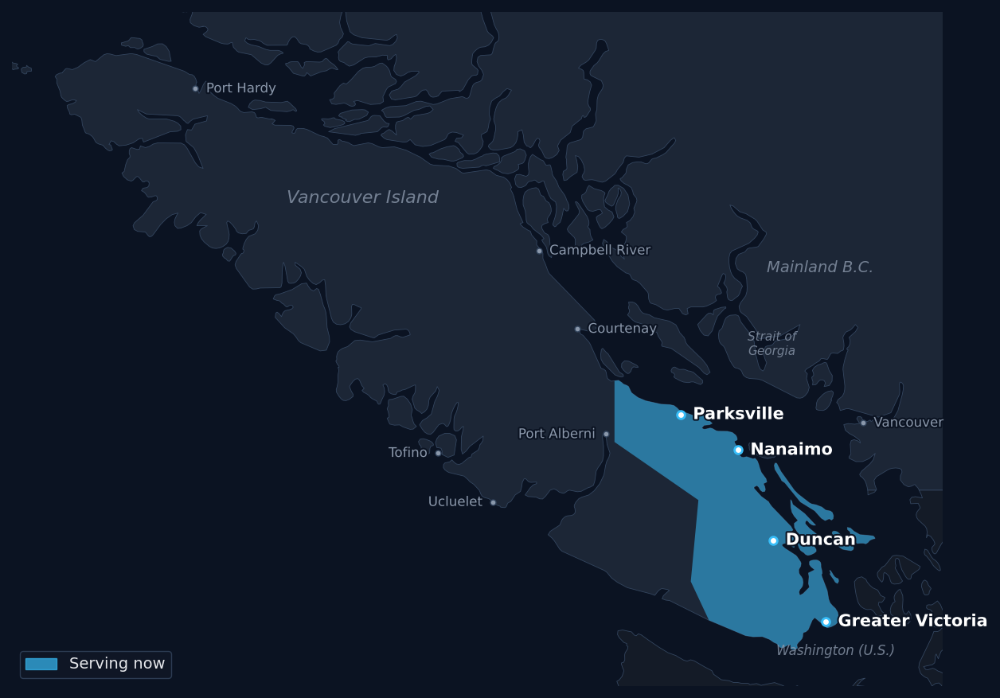
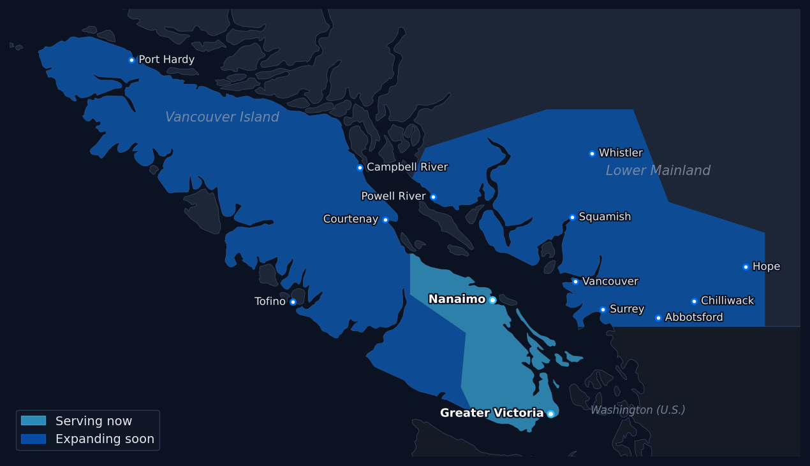
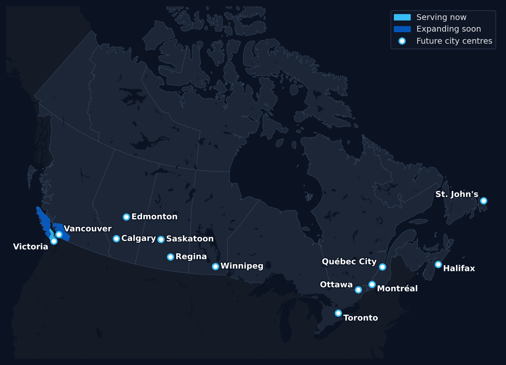
Submit a request for a complimentary consultation or ask any questions about our AI literacy & governance offerings.
Common questions about AI literacy training, using AI safely, and where we serve.
AI literacy training teaches people how artificial intelligence tools work, how to use them productively, and how to recognize their limits and risks. At CogAegis, every session pairs practical AI skills with critical thinking, so you get the benefits of AI without handing over your own judgment or creativity.
We currently offer AI literacy training across central and south Vancouver Island, including Parksville, Nanaimo, Duncan and Greater Victoria (Victoria, Saanich, Oak Bay, Esquimalt, Langford, Colwood, View Royal, Sidney and Sooke). Next, we are expanding to the Lower Mainland (Vancouver, Burnaby, Surrey, Richmond, Coquitlam, North Vancouver, West Vancouver, Langley, Abbotsford, Chilliwack, Squamish, Whistler and the Sunshine Coast) and the rest of Vancouver Island (Courtenay, Comox, Campbell River, Port Alberni, Tofino, Ucluelet and Port Hardy). Our long-term goal is to serve Canada's major city centres, including Calgary, Edmonton, Saskatoon, Regina, Winnipeg, Toronto, Ottawa, Montréal, Québec City, Halifax and St. John's.
Our Beginner level is designed for people who are new to technology or not yet confident with it, including seniors. Sessions go at a comfortable pace and cover how to talk with AI assistants, how to use AI for everyday tasks, and how to recognize AI-generated scams such as fake voices, images and messages. The goal is confidence and safety, not jargon.
Students get the most from AI when they use it to research, question and check their own work, not to replace their thinking. Our training shows students how to use AI as a study partner, how to verify AI answers, and how to keep their own voice and reasoning in assignments, using our cognitive defense strategies.
Yes. Educators, students and researchers are among the core audiences we serve. Training can be tailored for K–12 schools, colleges and universities, from classroom and student workshops to professional development for teachers and faculty, and guidance on clear, responsible AI-use practices.
It can. Relying on AI for answers without questioning them can weaken the skills we use to reason, analyze and create. Our Cognitive Defense Strategy Workshops teach practical habits that keep people thinking independently while still using AI to save time and boost productivity.
Our training includes AI detection skills, so you can better recognize when you are reading, listening to or watching AI-generated content. This helps protect you and your organization from misinformation, deepfakes and AI-powered scams.
Yes. For organizations, we deliver team AI literacy training, Enterprise AI Discoverability Audits, and custom AI agents with standard operating procedures (SOPs) that improve productivity without compromising independent human logic and creativity.
Book a free 30-minute consultation. We will identify your current AI literacy level and goals, then recommend the right training. Use the contact form above or email questions@cogaegis.com.
Tap anywhere to close